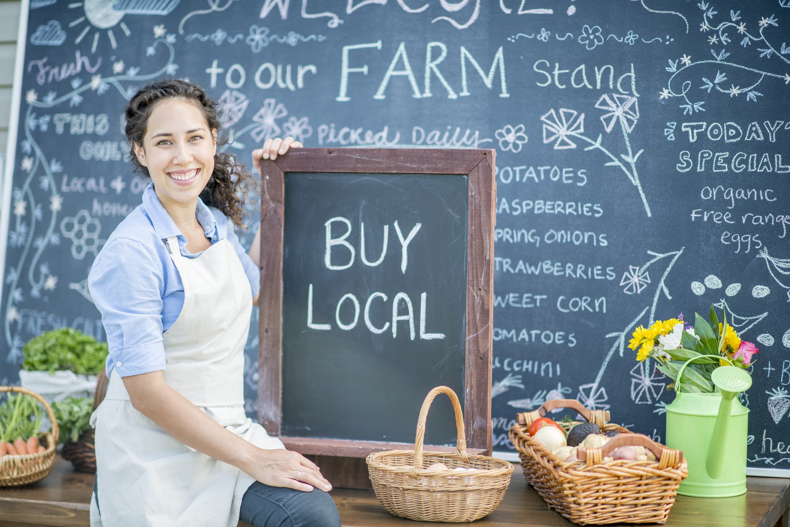

Target Audience
The target audience are local business owners and familes who are part of the Kempton Park community. Our goal is the foster a sense of community by having familes partisapating in the local events, which are supported by the locally owned business. We are hoping that as the community get to know the local business owners they will want to support these businesses and help them thrive, this will help our community thrive as a whole.
Local family

- Local to Kempton Park
- Married couple with two to three children
- Most have relitives in the area like parent, brothers, sister, aunts, uncles, nephews and neices etc
- Between the ages of 28 to 45
- Love doing things together as a family
- Very community orientated
Local business owners
- Owns a business in Kempton Park
- Loves getting to know people
- Loves to serve and meet peoples needs
- Wants to build there business to ensure they can provide for their familes needs
- Well educated
- Very community orientated